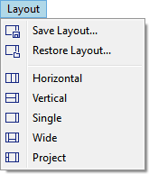
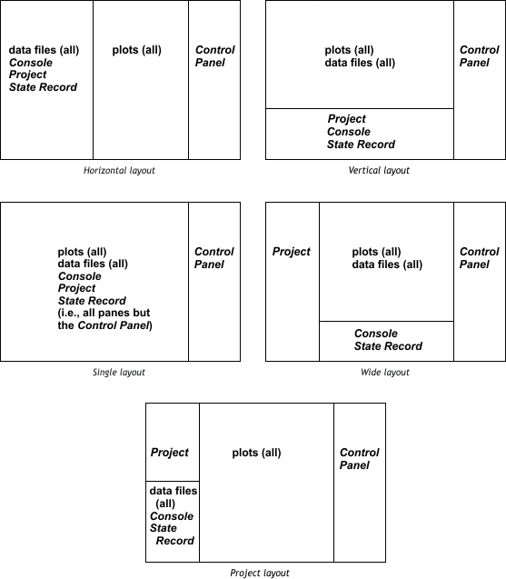

布局
任何时候，程序中窗格（panes）的配置——哪些窗格可见、它们在程序窗口中如何排列、其大小等等——构成一个布局。当前布局会在关闭当前项目时随项目一起保存。下次打开该项目时，布局将自动恢复到已保存的布局状态。此外还有可用的预设布局。布局可以（独立于项目）保存，并在以后应用于当前窗口。
当前布局通过调整停靠（docked）窗格的大小（sizing）并移动（moving）它们来创建，或根据需要将它们浮动（floating）。在主窗口内，唯一不能在布局中重新排列的元素是控制面板和主菜单。

图 1：布局菜单。
布局菜单提供快速设置（或重置）当前布局的手段。
菜单下半部分提供预设布局样式。这些预设——“水平”“垂直”“单个”“宽”和“项目”——在从菜单中选择时即应用为当前布局。下图展示了菜单上的每个布局选项如何在主程序窗口内组织窗格。

布局菜单上的前两个命令“保存布局…”和“恢复布局…”提供了将当前布局保存到文件的手段（“保存布局…”）。用户通过“恢复布局…”命令选择该已保存的文件，从而将界面恢复到所保存的布局状态。当需要在不同项目之间切换、但又要让每个项目处于相同布局状态时，此功能很有用。
| 这些内容对您有帮助吗？… 版权与免责声明 | FLAC3D © 2019, Itasca | 原文更新于 2020 年 10 月 8 日 |